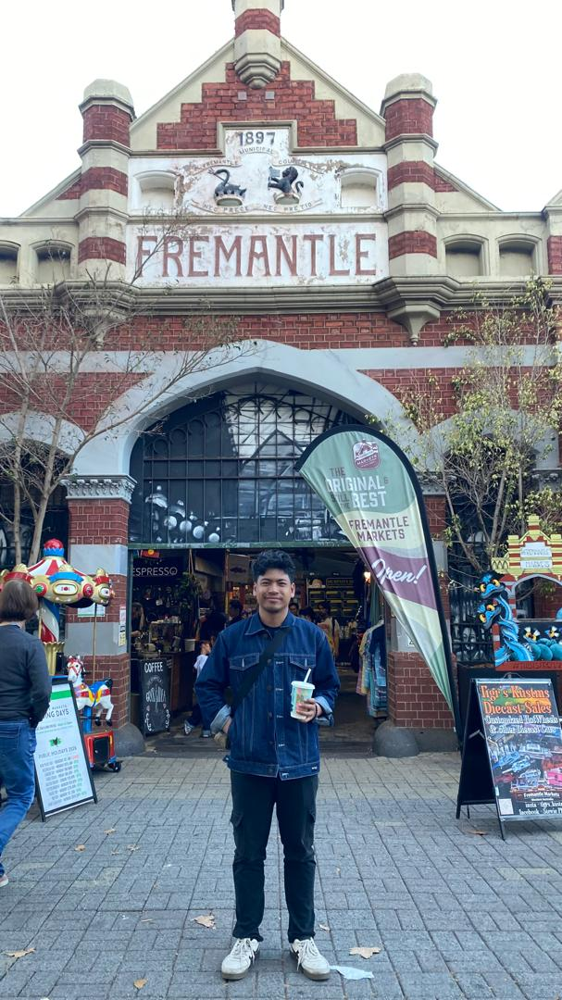
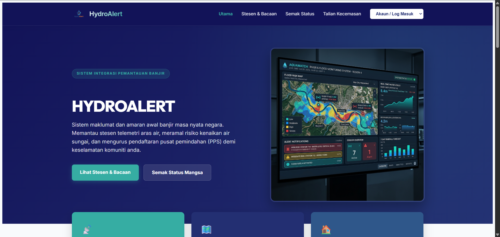
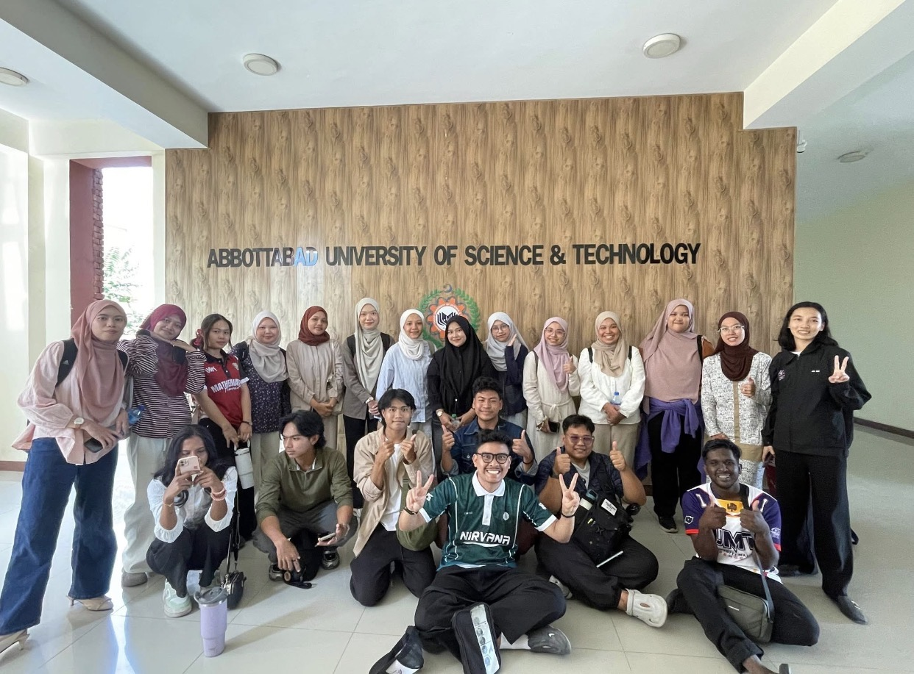

Java
Backend logic, web systems, and enterprise-grade application development.
Hello, I’m
Final-year Computer Science student at Universiti Malaysia Terengganu crafting thoughtful web experiences, reliable systems, and practical IT solutions with a security-first mindset.

About
I’m a final-year Computer Science student at Universiti Malaysia Terengganu with a strong interest in building modern web applications, simplifying complex technical problems, and contributing to reliable IT environments.
My work spans Java-based web platforms, infrastructure-minded support, IT operations, and a growing focus on cybersecurity and networking. I enjoy translating ideas into polished digital experiences that are both functional and memorable.
Projects
Technologies
Years of growth
Ready for internship
Skills
Backend logic, web systems, and enterprise-grade application development.
Semantic and accessible structure for modern interfaces.
Advanced styling, responsive systems, and polished UI design.
Interactive interfaces and dynamic user experiences.
Database design, querying, and structured data modeling.
Rapid, responsive UI development with modern components.
Dynamic Java-based web application development.
Version control, collaboration, and project organization.
Fundamentals of connectivity, troubleshooting, and infrastructure awareness.
System familiarity and hands-on command-line operations.
Featured Projects

A modern flood monitoring and management platform developed using Java, JSP, Servlet, Bootstrap, and MySQL. The system supports water level monitoring, rainfall tracking, station management, dashboard visibility, risk analysis, user management, and report generation.
An embedded system built around Raspberry Pi Pico W and ThingSpeak to collect environmental data from temperature, humidity, light, and ultrasonic sensors.
Experience
Updated more than 100 university websites, developed the Billboard System, managed BookStack, created reports, and supported ongoing website maintenance.
Built a full-stack web solution for flood monitoring with dashboards, reporting, and station oversight to support operational decision-making.
Strengthened practical skills across web development, system support, troubleshooting, and modern software workflows.
Education
Studying software engineering, systems thinking, networking, and data-driven development in a modern computing environment.
Built a strong technical base in computing fundamentals, application development, and practical problem-solving.
Pakistan Mobility

Participated in an academic exchange involving Abbottabad University, COMSATS University, and the University of Lahore, expanding my perspective on international collaboration, education, and technology ecosystems.
Resume
Contact
I’m currently exploring internship opportunities for August 2026 to January 2027 and would love to connect.